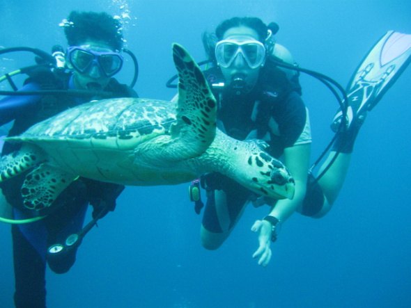
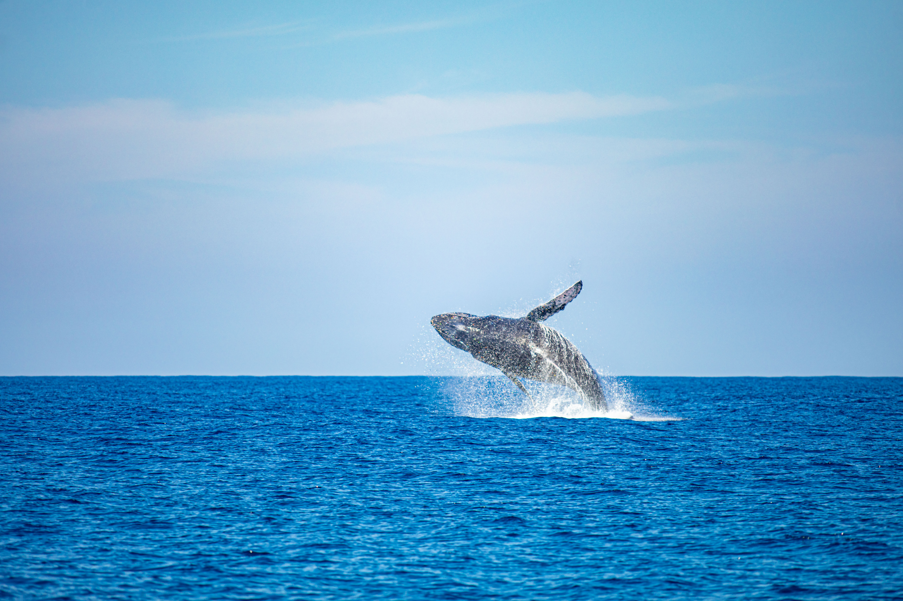
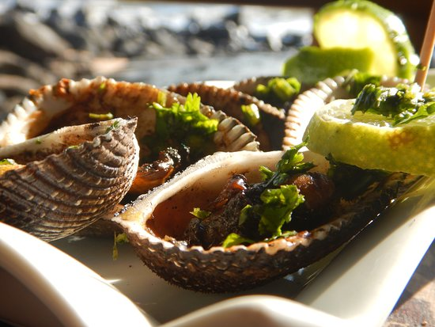

Snorkel
Las aguas de Los Cóbanos permiten realizar snorkel para observar arrecifes, peces y diferentes formas de vida marina. Los recorridos pueden realizarse con guías locales.
.jpeg)
Los Cóbanos es una comunidad de pescadores ubicada en la costa occidental de El Salvador, cerca de Acajutla, Sonsonate. Sus playas se caracterizan por su arena de composición coralina, aguas tranquilas y formaciones rocosas. La zona también posee un importante ecosistema marino protegido, donde se pueden encontrar arrecifes y una gran diversidad de especies marinas.
Descubre algunas de las actividades que puedes realizar durante tu visita a este destino natural.
Las aguas de Los Cóbanos permiten realizar snorkel para observar arrecifes, peces y diferentes formas de vida marina. Los recorridos pueden realizarse con guías locales.

Los arrecifes volcánicos y formaciones submarinas convierten a Los Cóbanos en un sitio destacado para practicar buceo y conocer la biodiversidad que existe bajo sus aguas.

Durante determinadas épocas del año se pueden realizar recorridos en lancha para observar fauna marina. Los Cóbanos es conocido por los avistamientos de ballenas jorobadas y otras especies marinas.
Además de sus atractivos naturales, puedes disfrutar de gastronomía, hospedaje y actividades junto al mar.

En la zona existen diferentes opciones de alimentación donde puedes disfrutar pescados, mariscos y otros platillos mientras observas el paisaje costero.
Ubicación:
Los Cóbanos, Acajutla, Sonsonate.
Recomendación:
Consulta los horarios directamente con
cada establecimiento.

La pesca es una actividad relacionada con la comunidad local. También existen recorridos en embarcaciones que permiten realizar pesca en aguas abiertas con apoyo de operadores locales.
Actividad:
Pesca artesanal y deportiva.
Consejo:
Coordina los recorridos con operadores
locales autorizados.

Sus aguas tranquilas, arena de composición coralina y formaciones rocosas permiten disfrutar de caminatas, fotografías y momentos de descanso frente al océano.
Ideal para:
Familias, naturaleza y fotografía.
Recomendación:
No extraer corales, conchas ni animales
del área protegida.
Elige una tour operadora, un guía o el transporte, indica la fecha y el número de personas, y agrega tu reserva al carrito.
Recorrido en lancha hasta el arrecife para observar peces y vida marina, con equipo incluido.
$25 por persona
Inmersión guiada con instructor y equipo incluido para conocer la biodiversidad bajo el agua.
$60 por persona
Salida en lancha para observar fauna marina. Los avistamientos dependen de la época del año.
$35 por persona
Recorrido por la playa y el arrecife con explicación del ecosistema marino y de las normas para cuidarlo.
$25 por grupo
Ideal para visitantes extranjeros. Explicaciones en dos idiomas durante todo el recorrido.
$40 por grupo
Salida de pesca artesanal con un pescador de la comunidad que conoce la zona.
$60 por grupo

Viaje de ida y vuelta hasta Los Cóbanos, con salida por la mañana y regreso por la tarde.
$10 por persona

Vehículo para tu grupo, con conductor disponible durante tu visita a la playa.
$55 por vehículo

Para excursiones escolares, familias grandes o grupos de amigos. Reserva con anticipación.
$120 por vehículo